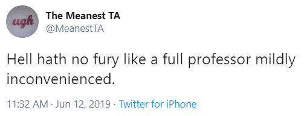

9 Advice for Students
My most important piece of general advice to people is to be kind. That’s not always the thing I do as well as I’d like.
9.1 On Graduate School
For graduate students, I urge you to take as much advantage of this learning experience as you can. While I’ll refer to some of the pieces below during the course, I’ve gathered a few favorites here.
- From matt.might.net…
- Four Things You Should Do When You’re Bored, on YouTube (the four things are Exercise / Read / Meditate / Find and Engage a Hobby with Passion). Also, Get Up and Move. It May Make You Happier by Gretchen Reynolds, in the New York Times, 2017-01-25.
- Why academics need to focus on structuring their time from University Affairs.
- Most people are really bad at meetings, including Professor Love. In a series of tweets, Greg Wilson argues that “the single most useful training you can give an adult is how to run a meeting and how to participate in someone else’s.” He then provides some nice tips in subsequent tweets, although the link provided there to a blog post is no longer working.
- Some people need help taking notes. You might be interested in Cornell Note Taking or the 5 other methods described here.
- You may be interested in the American Statistical Association, and its This is Statistics program.
9.2 On Seeking a Job
If I have a job or internship to offer, I’ll be noisy about it in class. In the meantime, I’d consider joining the American Statistical Association as a student member and perhaps joining the Greater Cleveland R Meetup Group.
Here are some gathered thoughts from other folks that you might enjoy:
- General Advice on an Academic Career Path (which is filled with useful advice, especially for those studying biostatistics.)
- Advice for Applying to Data Science Jobs from Emily Robinson
- Academic job search advice from matt.might.net
- Career Advice for Data Scientists was a panel at rstudio::conf 2020 focused on building a career around R.
9.3 On Writing, Presenting & Communicating
I write all the time. It’s my job. It’s yours, too. You’ll do more of it here than you may be expecting in this class, and in life. So you’ll need to take advantage of every opportunity you have to write more effectively tomorrow than you do today.
Here’s what I find to be a compelling argument from George Cobb …
If you want your work with data to make a difference, devote time and effort to choosing the words and pictures you use to present your evidence and conclusions. If you teach or supervise, seek to reward those - they who learn from you, and they who report to you – when they spend time crafting their message.
Think back to the last “report” you were expected to read. Is it easy to recall the main points? The answer, yes or no, depends not so much on the quality of the data, the effort, and the thinking that went into the report, nor on your own dutiful diligence in reading the report, but rather, and mainly, on whether the people who wrote the report had learned and practiced the skills of how to use words and pictures, first, to claim attention, and second, to claim retention: to deliver a message that sticks in the mind.
9.4 Campus Resources
The [University Resources for Student Support][University Resources / Student Support] section in this Syllabus links to several important resources for improving your English and your communication skills. We strongly encourage you to take advantage of these resources.
9.5 Advice from Other People
- Preparing Manuscripts for Submission to Medical Journals: The Paper Trail by H. Gilbert Welch, from Effective Clinical Practice in 1999.
- Start early, focus on high-visibility components, develop a systematic approach to the body of the paper, finish strong.
- Use thinkchecksubmit and see this tweet for some related suggestions when selecting a journal or publisher for your work.
- Writing a Scientific Paper in Four Easy Steps from Claus Wilke at The Serial Mentor blog.
- Rules to write a good research paper from Daniel Lemire.
- Hey-here are some tips on communicating data and statistics! from Andrew Gelman 2017-06-02.
- Writing Pet Peeves: Correctness, References, and Style from Tamara Munzner.
- Frank Harrell’s Checklist for Authors of Statistical Problems to Document and to Avoid
9.6 A Few Tips from Professor Love
- Statistics is a “getting the details right” business - we care deeply about details, and this applies to writing code or complete English sentences. RStudio has a spell-checker. To use it, click F7.
- Nothing impresses us as much as a clear and concise argument, presented using well-written English sentences, effective and well-labeled figures and tables.
- Don’t parrot back material that Professor Love wrote or said. State ideas in your own words. Stating them in my words is, technically, plagiarism.
- Edit your more adventurous output; don’t present everything you know how to do in R, and don’t forget that someone is trying to read both your code and your results.
- Make your work easy to evaluate. In responding to an assignment, be sure to answer the question that was asked, restating it as necessary.
- Clearly label everything: graphs, tables, your answer to a specific question. Everything. Again, make your work easy to evaluate.
- Simplify. Emphasize ideas in plain language. Avoid jargon. Use English well.
- Data are plural. Use “the data are …” rather than “the data is …”
- A paragraph must contain more than one sentence.
- Don’t switch tenses. If you want to write in the present tense, stick to it throughout.
- Don’t write or say random sample unless you used a random number generator. If you used haphazard sampling or convenience sampling, call it what it is, and indicate whether any problems could have cropped up as a result.
- Similarly, don’t defend a method of data collection because it is random. Most of the time we want to represent some population, and a random sample is just one way to ensure that certain types of biases have a low probability of creeping in.
- If you want to write that you used \(\alpha = 0.05\) as a significance level, then state that your results were obtained using a 95% confidence level, not a 95% confidence interval, unless you are actually interpreting a confidence interval.
- If you find yourself in the appalling situation of writing about a p-value (as opposed to simply stating it), then you should state something like:
- [1] We’re using a 95% confidence level.
- [2] We’re using a 5% significance level.
- [3] We’re using \(\alpha = 0.05\).
- Don’t use more than one of these expressions.
- Also, refer to all p-values that are less than 0.001 or perhaps less than 0.0001 as \(p < 0.001\), rather than, for instance, \(p = 0.00000001\) or, worse yet, \(p = 0\). In a similar vein, write all \(p\)-values that exceed 0.99 as \(p > 0.99\) instead of, for instance, \(p = 1\).
- To the extent possible, don’t use
computer-eseto label variables, plots or tables. R and Quarto allow you to change the labels on graphs and tables to meaningful things – do so. Use meaningful abbreviations, as necessary, explaining what they mean on the first usage. - When in doubt, err on the side of clarity. Clear thinking leads to clear writing.
Finally, don’t use the phrase “statistically significant” or “statistically detectable” in your writing. It’s not helpful.
9.7 A Bonus Opportunity
Once you have read through this Syllabus, please e-mail Professor Love a note using the subject line 432 Favorite TV Series containing:
- the name of one of your favorite television series
- information on how the series can be streamed (if it can, in the US)
- a sentence or two describing why you like this series and think others in the class might enjoy it.
If Professor Love receives your email by 9 AM on Thursday 2026-01-22, he will add some bonus credit to your class participation grade.
Thank you.